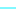

<!doctype html>
<html lang="en">
    <head>
        <meta charset="utf-8">
        <meta http-equiv="X-UA-Compatible" content="IE=edge">
        <meta name="viewport" content="initial-scale=1,user-scalable=no,maximum-scale=1,width=device-width">
        <meta name="mobile-web-app-capable" content="yes">
        <meta name="apple-mobile-web-app-capable" content="yes">
        <link rel="stylesheet" href="css/leaflet.css">
        <link rel="stylesheet" href="css/L.Control.Layers.Tree.css">
        <link rel="stylesheet" href="css/qgis2web.css">
        <link rel="stylesheet" href="css/fontawesome-all.min.css">
        <link rel="stylesheet" href="css/leaflet.photon.css">
        <style>
        html, body, #map {
            width: 100%;
            height: 100%;
            padding: 0;
            margin: 0;
        }
        </style>
        <title>Buellton_Sewege (QFieldCloud)</title>
    </head>
    <body>
        <div id="map">
        </div>
        <script src="js/qgis2web_expressions.js"></script>
        <script src="js/leaflet.js"></script>
        <script src="js/L.Control.Layers.Tree.min.js"></script>
        <script src="js/leaflet.rotatedMarker.js"></script>
        <script src="js/leaflet.pattern.js"></script>
        <script src="js/leaflet-hash.js"></script>
        <script src="js/Autolinker.min.js"></script>
        <script src="js/rbush.min.js"></script>
        <script src="js/labelgun.min.js"></script>
        <script src="js/labels.js"></script>
        <script src="js/leaflet.photon.js"></script>
        <script src="data/River_View_Park_1.js"></script>
        <script src="data/Park_250ft_Buffer_2.js"></script>
        <script src="data/Sewer_Mains_3.js"></script>
        <script src="data/Sewer_Assets_4.js"></script>
        <script>
        var map = L.map('map', {
            zoomControl:false, maxZoom:28, minZoom:1
        }).fitBounds([[34.61160582283404,-120.21107153894224],[34.6235895741806,-120.19621227923045]]);
        var hash = new L.Hash(map);
        map.attributionControl.setPrefix('<a href="https://github.com/qgis2web/qgis2web" target="_blank">qgis2web</a> &middot; <a href="https://leafletjs.com" title="A JS library for interactive maps">Leaflet</a> &middot; <a href="https://qgis.org">QGIS</a>');
        var autolinker = new Autolinker({truncate: {length: 30, location: 'smart'}});
        // remove popup's row if "visible-with-data"
        function removeEmptyRowsFromPopupContent(content, feature) {
         var tempDiv = document.createElement('div');
         tempDiv.innerHTML = content;
         var rows = tempDiv.querySelectorAll('tr');
         for (var i = 0; i < rows.length; i++) {
             var td = rows[i].querySelector('td.visible-with-data');
             var key = td ? td.id : '';
             if (td && td.classList.contains('visible-with-data') && feature.properties[key] == null) {
                 rows[i].parentNode.removeChild(rows[i]);
             }
         }
         return tempDiv.innerHTML;
        }
        // modify popup if contains media
        function addClassToPopupIfMedia(content, popup) {
            var tempDiv = document.createElement('div');
            tempDiv.innerHTML = content;
            var imgTd = tempDiv.querySelector('td img');
            if (imgTd) {
                var src = imgTd.getAttribute('src');
                if (/\.(jpg|jpeg|png|gif|bmp|webp|avif)$/i.test(src)) {
                    popup._contentNode.classList.add('media');
                    var img = popup._contentNode.querySelector('td img');
                    if (img) {
                        // If already loaded (cache), update immediately
                        if (img.complete && img.naturalHeight > 0) {
                            popup.update();
                        } else {
                            img.addEventListener('load', function() {
                                popup.update();
                            });
                            img.addEventListener('error', function() {
                                popup.update();
                            });
                        }
                    }
                } else if (/\.(mp3|wav|ogg|aac)$/i.test(src)) {
                    var audio = document.createElement('audio');
                    audio.controls = true;
                    audio.src = src;
                    imgTd.parentNode.replaceChild(audio, imgTd);
                    popup._contentNode.classList.add('media');
                    setTimeout(function() {
                        popup.setContent(tempDiv.innerHTML);
                        popup.update();
                    }, 10);
                } else if (/\.(mp4|webm|ogg|mov)$/i.test(src)) {
                    var video = document.createElement('video');
                    video.controls = true;
                    video.src = src;
                    video.style.width = "400px";
                    video.style.height = "300px";
                    video.style.maxHeight = "60vh";
                    video.style.maxWidth = "60vw";
                    imgTd.parentNode.replaceChild(video, imgTd);
                    popup._contentNode.classList.add('media');
                    // Aggiorna il popup quando il video carica i metadati
                    video.addEventListener('loadedmetadata', function() {
                        popup.update();
                    });
                    setTimeout(function() {
                        popup.setContent(tempDiv.innerHTML);
                        popup.update();
                    }, 10);
                } else {
                    popup._contentNode.classList.remove('media');
                }
            } else {
                popup._contentNode.classList.remove('media');
            }
        }
        var zoomControl = L.control.zoom({
            position: 'topleft'
        }).addTo(map);
        var bounds_group = new L.featureGroup([]);
        function setBounds() {
        }
        map.createPane('pane_GoogleSatellite_0');
        map.getPane('pane_GoogleSatellite_0').style.zIndex = 400;
        var layer_GoogleSatellite_0 = L.tileLayer('https://mt1.google.com/vt/lyrs=s&x={x}&y={y}&z={z}', {
            pane: 'pane_GoogleSatellite_0',
            opacity: 0.975,
            attribution: '',
            minZoom: 1,
            maxZoom: 28,
            minNativeZoom: 0,
            maxNativeZoom: 18
        });
        layer_GoogleSatellite_0;
        map.addLayer(layer_GoogleSatellite_0);
        function pop_River_View_Park_1(feature, layer) {
            var popupContent = '<table>\
                    <tr>\
                        <td colspan="2">' + (feature.properties['fid'] !== null ? autolinker.link(String(feature.properties['fid']).replace(/'/g, '\'').toLocaleString()) : '') + '</td>\
                    </tr>\
                </table>';
            var content = removeEmptyRowsFromPopupContent(popupContent, feature);
			layer.on('popupopen', function(e) {
				addClassToPopupIfMedia(content, e.popup);
			});
			layer.bindPopup(content, { maxHeight: 400 });
        }

        function style_River_View_Park_1_0() {
            return {
                pane: 'pane_River_View_Park_1',
                opacity: 1,
                color: 'rgba(35,35,35,1.0)',
                dashArray: '',
                lineCap: 'butt',
                lineJoin: 'miter',
                weight: 1.0, 
                fillOpacity: 0,
                interactive: true,
            }
        }
        map.createPane('pane_River_View_Park_1');
        map.getPane('pane_River_View_Park_1').style.zIndex = 401;
        map.getPane('pane_River_View_Park_1').style['mix-blend-mode'] = 'normal';
        var layer_River_View_Park_1 = new L.geoJson(json_River_View_Park_1, {
            attribution: '',
            interactive: true,
            dataVar: 'json_River_View_Park_1',
            layerName: 'layer_River_View_Park_1',
            pane: 'pane_River_View_Park_1',
            onEachFeature: pop_River_View_Park_1,
            style: style_River_View_Park_1_0,
        });
        bounds_group.addLayer(layer_River_View_Park_1);
        map.addLayer(layer_River_View_Park_1);
        function pop_Park_250ft_Buffer_2(feature, layer) {
            var popupContent = '<table>\
                    <tr>\
                        <td colspan="2">' + (feature.properties['fid'] !== null ? autolinker.link(String(feature.properties['fid']).replace(/'/g, '\'').toLocaleString()) : '') + '</td>\
                    </tr>\
                </table>';
            var content = removeEmptyRowsFromPopupContent(popupContent, feature);
			layer.on('popupopen', function(e) {
				addClassToPopupIfMedia(content, e.popup);
			});
			layer.bindPopup(content, { maxHeight: 400 });
        }

        function style_Park_250ft_Buffer_2_0() {
            return {
                pane: 'pane_Park_250ft_Buffer_2',
                opacity: 1,
                color: 'rgba(247,166,9,1.0)',
                dashArray: '12.0,6.0',
                lineCap: 'square',
                lineJoin: 'bevel',
                weight: 3.0,
                fillOpacity: 0,
                interactive: true,
            }
        }
        map.createPane('pane_Park_250ft_Buffer_2');
        map.getPane('pane_Park_250ft_Buffer_2').style.zIndex = 402;
        map.getPane('pane_Park_250ft_Buffer_2').style['mix-blend-mode'] = 'normal';
        var layer_Park_250ft_Buffer_2 = new L.geoJson(json_Park_250ft_Buffer_2, {
            attribution: '',
            interactive: true,
            dataVar: 'json_Park_250ft_Buffer_2',
            layerName: 'layer_Park_250ft_Buffer_2',
            pane: 'pane_Park_250ft_Buffer_2',
            onEachFeature: pop_Park_250ft_Buffer_2,
            style: style_Park_250ft_Buffer_2_0,
        });
        bounds_group.addLayer(layer_Park_250ft_Buffer_2);
        map.addLayer(layer_Park_250ft_Buffer_2);
        function pop_Sewer_Mains_3(feature, layer) {
            var popupContent = '<table>\
                    <tr>\
                        <td class="visible-with-data" id="fid" colspan="2"><strong>fid</strong><br />' + (feature.properties['fid'] !== null ? autolinker.link(String(feature.properties['fid']).replace(/'/g, '\'').toLocaleString()) : '') + '</td>\
                    </tr>\
                    <tr>\
                        <th scope="row">pipe_material</th>\
                        <td class="visible-with-data" id="pipe_material">' + (feature.properties['pipe_material'] !== null ? autolinker.link(String(feature.properties['pipe_material']).replace(/'/g, '\'').toLocaleString()) : '') + '</td>\
                    </tr>\
                </table>';
            var content = removeEmptyRowsFromPopupContent(popupContent, feature);
			layer.on('popupopen', function(e) {
				addClassToPopupIfMedia(content, e.popup);
			});
			layer.bindPopup(content, { maxHeight: 400 });
        }

        function style_Sewer_Mains_3_0() {
            return {
                pane: 'pane_Sewer_Mains_3',
                opacity: 1,
                color: 'rgba(0,240,255,1.0)',
                dashArray: '',
                lineCap: 'square',
                lineJoin: 'bevel',
                weight: 1.0,
                fillOpacity: 0,
                interactive: true,
            }
        }
        map.createPane('pane_Sewer_Mains_3');
        map.getPane('pane_Sewer_Mains_3').style.zIndex = 403;
        map.getPane('pane_Sewer_Mains_3').style['mix-blend-mode'] = 'normal';
        var layer_Sewer_Mains_3 = new L.geoJson(json_Sewer_Mains_3, {
            attribution: '',
            interactive: true,
            dataVar: 'json_Sewer_Mains_3',
            layerName: 'layer_Sewer_Mains_3',
            pane: 'pane_Sewer_Mains_3',
            onEachFeature: pop_Sewer_Mains_3,
            style: style_Sewer_Mains_3_0,
        });
        bounds_group.addLayer(layer_Sewer_Mains_3);
        map.addLayer(layer_Sewer_Mains_3);
        function pop_Sewer_Assets_4(feature, layer) {
            var popupContent = '<table>\
                    <tr>\
                        <td colspan="2">' + (feature.properties['fid'] !== null ? autolinker.link(String(feature.properties['fid']).replace(/'/g, '\'').toLocaleString()) : '') + '</td>\
                    </tr>\
                    <tr>\
                        <td colspan="2">' + (feature.properties['asset_id'] !== null ? autolinker.link(String(feature.properties['asset_id']).replace(/'/g, '\'').toLocaleString()) : '') + '</td>\
                    </tr>\
                    <tr>\
                        <td colspan="2">' + (feature.properties['condition'] !== null ? autolinker.link(String(feature.properties['condition']).replace(/'/g, '\'').toLocaleString()) : '') + '</td>\
                    </tr>\
                    <tr>\
                        <td colspan="2">' + (feature.properties['asset_type'] !== null ? autolinker.link(String(feature.properties['asset_type']).replace(/'/g, '\'').toLocaleString()) : '') + '</td>\
                    </tr>\
                    <tr>\
                        <td colspan="2">' + (feature.properties['inspection_date'] !== null ? autolinker.link(String(feature.properties['inspection_date']).replace(/'/g, '\'').toLocaleString()) : '') + '</td>\
                    </tr>\
                    <tr>\
                        <td colspan="2">' + (feature.properties['action_required'] !== null ? autolinker.link(String(feature.properties['action_required']).replace(/'/g, '\'').toLocaleString()) : '') + '</td>\
                    </tr>\
                    <tr>\
                        <td colspan="2">' + (feature.properties['park_buffer_250ft'] !== null ? autolinker.link(String(feature.properties['park_buffer_250ft']).replace(/'/g, '\'').toLocaleString()) : '') + '</td>\
                    </tr>\
                    <tr>\
                        <td colspan="2">' + (feature.properties['photo_path'] !== null ? '' : '') + '</td>\
                    </tr>\
                </table>';
            var content = removeEmptyRowsFromPopupContent(popupContent, feature);
			layer.on('popupopen', function(e) {
				addClassToPopupIfMedia(content, e.popup);
			});
			layer.bindPopup(content, { maxHeight: 400 });
        }

        function style_Sewer_Assets_4_0(feature) {
            switch(String(feature.properties['condition'])) {
                case 'Good':
                    return {
                pane: 'pane_Sewer_Assets_4',
                radius: 5.6,
                opacity: 1,
                color: 'rgba(253,253,253,1.0)',
                dashArray: '',
                lineCap: 'butt',
                lineJoin: 'miter',
                weight: 1.0,
                fill: true,
                fillOpacity: 1,
                fillColor: 'rgba(46,223,18,1.0)',
                interactive: true,
            }
                    break;
                case 'Needs Repair':
                    return {
                pane: 'pane_Sewer_Assets_4',
                radius: 5.6,
                opacity: 1,
                color: 'rgba(253,253,253,1.0)',
                dashArray: '',
                lineCap: 'butt',
                lineJoin: 'miter',
                weight: 1.0,
                fill: true,
                fillOpacity: 1,
                fillColor: 'rgba(224,218,6,1.0)',
                interactive: true,
            }
                    break;
                default:
                    return {
                pane: 'pane_Sewer_Assets_4',
                radius: 5.6,
                opacity: 1,
                color: 'rgba(253,253,253,1.0)',
                dashArray: '',
                lineCap: 'butt',
                lineJoin: 'miter',
                weight: 1.0,
                fill: true,
                fillOpacity: 1,
                fillColor: 'rgba(205,41,60,1.0)',
                interactive: true,
            }
                    break;
            }
        }
        map.createPane('pane_Sewer_Assets_4');
        map.getPane('pane_Sewer_Assets_4').style.zIndex = 404;
        map.getPane('pane_Sewer_Assets_4').style['mix-blend-mode'] = 'normal';
        var layer_Sewer_Assets_4 = new L.geoJson(json_Sewer_Assets_4, {
            attribution: '',
            interactive: true,
            dataVar: 'json_Sewer_Assets_4',
            layerName: 'layer_Sewer_Assets_4',
            pane: 'pane_Sewer_Assets_4',
            onEachFeature: pop_Sewer_Assets_4,
            pointToLayer: function (feature, latlng) {
                var context = {
                    feature: feature,
                    variables: {}
                };
                return L.circleMarker(latlng, style_Sewer_Assets_4_0(feature));
            },
        });
        bounds_group.addLayer(layer_Sewer_Assets_4);
        map.addLayer(layer_Sewer_Assets_4);
        var overlaysTree = [
            {label: 'Sewer_Assets<br /><table><tr><td style="text-align: center;"></td><td>Good</td></tr><tr><td style="text-align: center;"></td><td>Needs Repair</td></tr><tr><td style="text-align: center;"></td><td>Broken</td></tr></table>', layer: layer_Sewer_Assets_4},
            {label: ' Sewer_Mains', layer: layer_Sewer_Mains_3},
            {label: ' Park_250ft_Buffer ', layer: layer_Park_250ft_Buffer_2},
            {label: ' River_View_Park', layer: layer_River_View_Park_1},
            {label: "Google Satellite", layer: layer_GoogleSatellite_0},]
        var lay = L.control.layers.tree(null, overlaysTree,{
            //namedToggle: true,
            //selectorBack: false,
            //closedSymbol: '&#8862; &#x1f5c0;',
            //openedSymbol: '&#8863; &#x1f5c1;',
            //collapseAll: 'Collapse all',
            //expandAll: 'Expand all',
            collapsed: true,
        });
        lay.addTo(map);
        setBounds();
        </script>        
    </body>
</html>
